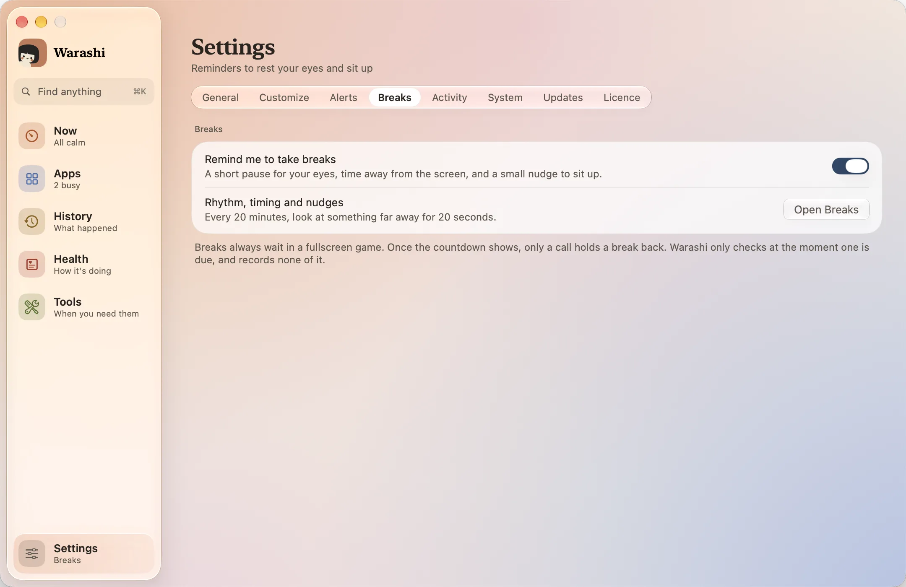
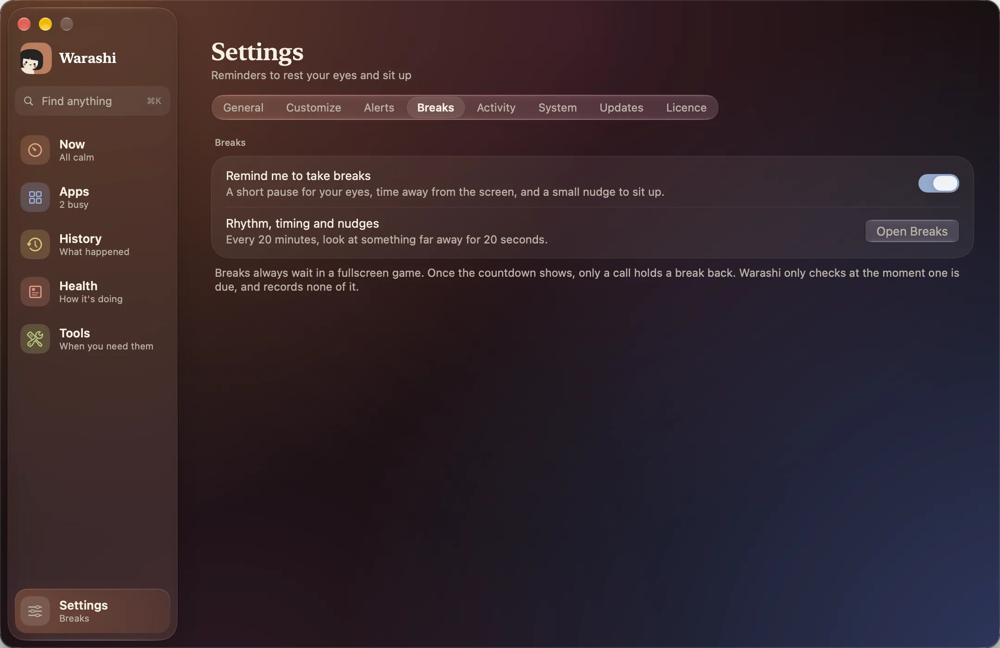

Looking at a screen for hours tires your eyes and your back. Breaks reminds you to look away now and then, to step away in a rhythm that suits you, and waits politely when you're busy. It's off until you turn it on.
- Turn it on
Open Settings › Breaks and switch on Remind me to take breaks. Or press Turn On on the Breaks tile in Tools.


- Pick a rhythm
Your rhythm offers ready-made cycles: 20-20-20 (the default: every 20 minutes, look far away for 20 seconds), Pomodoro (25 minutes of work, 5 of rest, and 15 after every fourth), 50 and 10, and Deep work (90 minutes, then 20). Change anything below and it becomes Custom.
- Or set your own
Eye breaks come Every 5 to 60 minutes, For 10 to 60 seconds. Rest breaks take you away from the screen: Work for 15 to 120 minutes, Then rest for 2 to 30, and, if you like, A longer rest every 2 to 5 rests. Try a Break and Try a Rest show you one now.
- A heads-up first
Fifteen seconds before a break, a small pill under the menu bar says Break in 0:15, with Start Now, +5 min and Skip.
- Take the break
The break gently blurs every display, with a countdown and one suggestion, such as “Look at something far away.” or, for a rest, “Stand up and stretch.” A soft chime tells you when it's over. Skip, or Esc, ends it early.
Small nudges
Between breaks, two small moments that last about four seconds and never take your clicks. Sit up straight rises from the bottom of the screen to eye level while its little figure straightens, so your eyes, and your head, follow it up (every 30 minutes by default, or every 5 to 90). Blink grows out of the notch with an eye that blinks twice (off by default, or every 5 to 30 minutes).
How rests and eye breaks fit together
- An eye break due within five minutes of a rest is left out: the rest covers it. A rest also starts the eye break and posture timers again.
- Being away from your Mac for as long as a rest counts as that rest.
- Sleep or locking your screen starts the work timer again, but Pomodoro remembers how many rests you've had.
It waits while you're busy
- A break that's due waits while your microphone or camera is in use, while another app keeps the screen awake (a video or a presentation), or while a full-screen game is in front. Tools shows Waiting.
- Time away counts: five minutes away from the keyboard and mouse, sleep or locking your screen starts the eye break timer again.
- Warashi only checks this at the moment a break is due, records none of it, and needs no permissions.
Start one yourself
Press Break in the menu bar window or the notch, Take a Break in Tools, or turn on Start a break with ⌃⌥⌘B in Settings › Breaks. That shortcut works even when reminders are off; press it again to end the break.